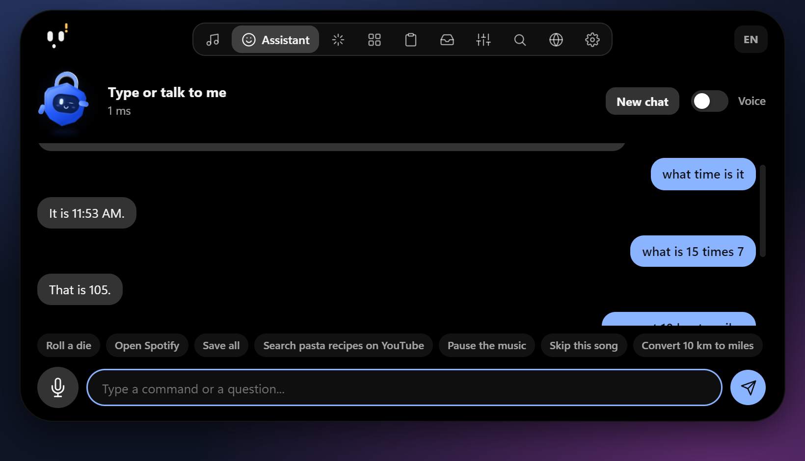

01
PARLA. LEI CAPISCE.
Un assistente che può davvero fare cose.
Apri app, regola volume e luminosità, crea timer, note e promemoria. Se una richiesta è più complessa, passa il lavoro a Claude Code.
UNA DYNAMIC ISLAND PER WINDOWS
Un piccolo spazio intelligente che ascolta, reagisce e ti mostra ciò che conta. Musica, voce, Claude Code e controlli — sempre a un gesto di distanza.
Windows 10/11 · Open source · Nessun account richiesto

PROVALA — PASSA IL CURSORE SULL'ISOLA
NON È UN ALTRO WIDGET
NotchIsland rimane discreta finché non ti serve. Poi si apre in un centro di controllo fluido che riunisce il tuo lavoro, la musica e il sistema.
PARLA. LEI CAPISCE.
Apri app, regola volume e luminosità, crea timer, note e promemoria. Se una richiesta è più complessa, passa il lavoro a Claude Code.
CLAUDE, A COLPO D'OCCHIO
Segui le sessioni in tempo reale: al lavoro, in attesa o completate. Ricevi una notifica e torna al codice senza perdere il filo.

IL TUO SPAZIO
Meteo, calendario, sistema, attività, note, calcolatrice e molto altro. Scegli cosa vedere e trascina ogni elemento dove vuoi.

HA UN CARATTERE

Gli occhi seguono il cursore. La faccina sorride con la musica, pensa con Claude, ascolta mentre parli e ti avvisa quando serve attenzione.
PRIVATA PER PROGETTO
Il riconoscimento vocale usa whisper.cpp in locale. Note, attività, promemoria e impostazioni restano sul dispositivo. Le integrazioni comunicano attraverso un hub limitato a 127.0.0.1 e protetto da token.
Leggi tutti i dettagli tecnici ↗PRONTA QUANDO LO SEI TU
Installer personalizzato · Installazione per utente · Licenza MIT